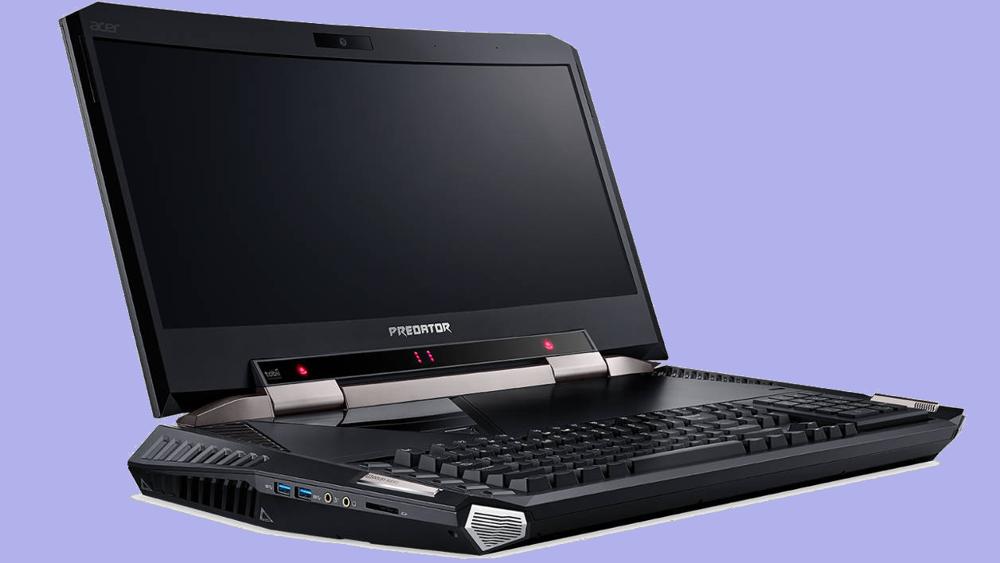
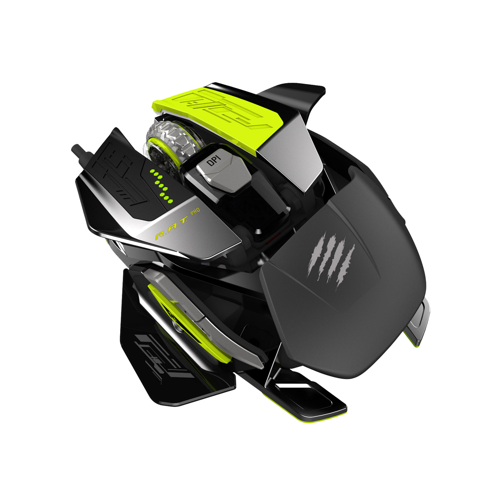
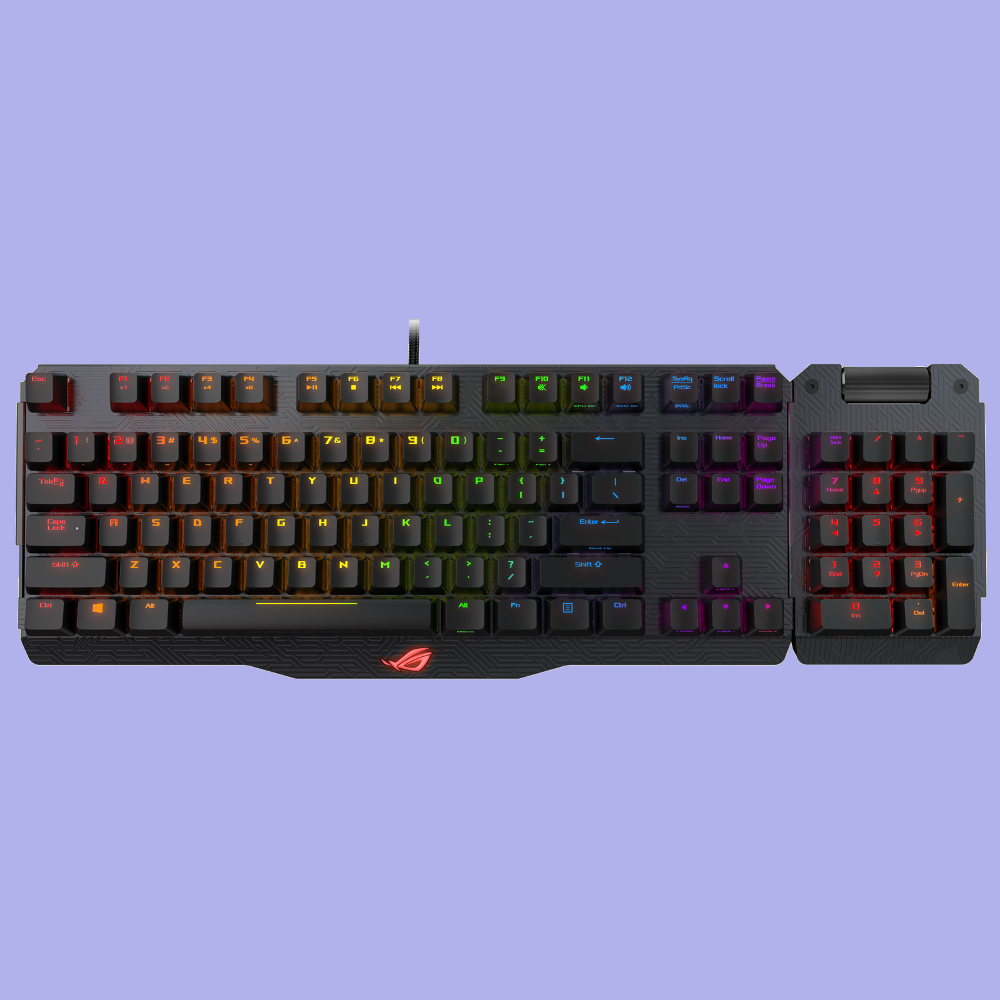

Tout nos produits:
Acer Predator 21 X GX21-71-76VC

- Design élégant avec dos en aluminium avec coloris noir abyssal, sablé à la perfection
- Processeur Intel Core i7-7820HK (Quad-Core 2.9 GHz / 3.9 GHz Turbo - Cache 8 Mo) avec possibilité d'overclocking
- 64 Go de mémoire vive DDR4 (4x 16 Go - 4 slots - maximum 64 Go au total)
- Ecran incurvé de 21" au format 21/9 avec résolution Wide Full HD (2560 x 1080) et technologie NVIDIA G-SYNC
- Dalle IPS : couleurs lumineuses et angles de vision larges
- 2 puces graphiques NVIDIA GeForce GTX 1080 en SLI avec 8 Go de mémoire dédiée GDDR5X (chacune)
- Deux SSD M.2 PCIe de 512 Go avec technologie NVMe en RAID 0 + disque dur de 1 To (7200 RPM)
- 1 port réversible USB 3.1 Type C avec technologie Thunderbolt 3
- 1 connecteur HDMI + 2 connecteurs DisplayPort
- Technologies Gigabit Ethernet Killer E2500 + Killer Wireless-AC 1535 et technologie Bluetooth 4.1
- Clavier mécanique avec switches Cherry MX Brown et touches rétroéclairées
- Pavé numérique avec module réversible rétroéclairé (1 face pavé numérique, 1 face pavé tactile)
- Technologie Tobii Eye Tracking : technologie de contrôle de jeu à partir du mouvement des yeux
- Système audio 4.2 : 4 haut-parleurs et 2 caissons de basses avec technologie Dolby Audio Premium
- Système de refroidissement avancé avec 5 ventilateurs dont 3 "Aeroblade" avec lames en métal
- Webcam HD 720p
- Alimentation 2 x 330 Watts
- Valise de transport et repose poignet amovible fournis
- Windows 10 Famille 64 bits
Ajouter au panier
Mad Catz R.A.T. PRO X (RAT ProX)

- Capteur capteur laser Pixart jusqu'à 100 à 8200 dpi
- 90 commandes programmables
- 10 boutons programmables
- 9 profiles enregistrables
- Poids de la souris : 77g
- Fréquence de 1000 Hz (125, 250, 500, 1000)
- Câble USB 2.0 tressé et connecteur plaqué or
- Compatible avec PC (Windows 10/ 8 / 7)
Ajouter au panier
ASUS ROG Republic of Gamers Claymore (MX Red

- Clavier mécanique pour gamer
- Switches Cherry MX Red
- Pavé numérique amovible
- Touches entièrement programmables
- Rétro-éclairage RGB et individuel des touches avec technologie Aura Sync
- 100 % anti-ghosting avec la fonction N-Key rollover
- Raccourcis : gestion de la vitesse des ventilateurs, éclairage et overcloking (si associé avec une carte mère ROG)
- Réglage de la fréquence de répétition
- Mémoire flash : enregistrez jusqu'à 6 profils
- Personnalisation via ROG Armoury
- Structure en aluminium
- Pieds à hauteur réglable
- Dimensions : 450 x 145 x 45 mm
- Poids : 943 g
Ajouter au panier